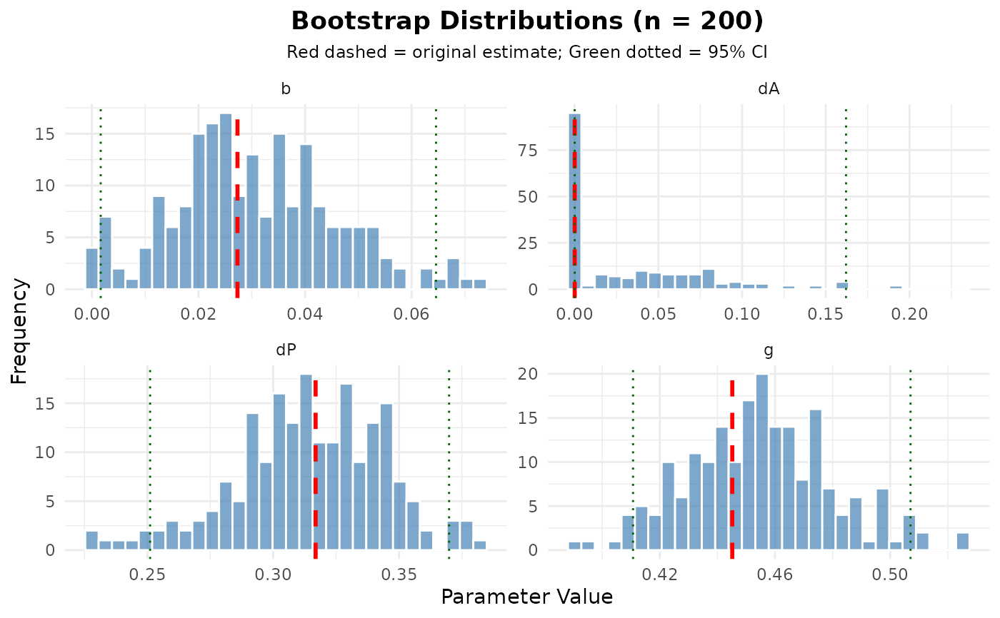

Bootstrap Confidence Intervals for 2-HT Model Parameters
Source:R/winter_2ht_boot.R
boot_winter_2ht.RdComputes bootstrap confidence intervals for the parameters of the 2-HT model by resampling the observed data with replacement.
Usage
boot_winter_2ht(
x,
nboot = 1000,
conf_level = 0.95,
lineup_size = 6,
method = c("percentile", "bca"),
parallel = FALSE,
ncpus = 2,
seed = NULL,
...
)Arguments
- x
A winter_2ht object from fit_winter_2ht(), OR count data/data frame as in fit_winter_2ht().
- nboot
Number of bootstrap samples. Default is 1000.
- conf_level
Confidence level for intervals. Default is 0.95.
- lineup_size
Lineup size (only needed if x is count data, not a winter_2ht object).
- method
Type of bootstrap CI: "percentile" (default) or "bca" (bias-corrected and accelerated).
- parallel
Logical indicating whether to use parallel processing. Default is FALSE.
- ncpus
Number of CPUs to use if parallel = TRUE. Default is 2.
- seed
Random seed for reproducibility. Default is NULL.
- ...
Additional arguments passed to fit_winter_2ht().
Value
An object of class "winter_2ht_boot" containing:
- boot_estimates
Matrix of bootstrap parameter estimates (nboot x 4)
- ci
Matrix of confidence intervals for each parameter
- original_fit
The original model fit
- nboot
Number of bootstrap samples
- conf_level
Confidence level used
Details
The bootstrap procedure resamples observations from the original data with replacement to create bootstrap datasets. For each bootstrap sample, the 2-HT model is re-fitted, and the distribution of parameter estimates across bootstrap samples is used to construct confidence intervals.
Two types of confidence intervals are available:
percentile: Uses quantiles of the bootstrap distribution
bca: Bias-corrected and accelerated intervals (more accurate but slower)
Examples
# \donttest{
counts <- c(
n_tp_suspect = 147, n_tp_filler = 94, n_tp_reject = 141,
n_ta_suspect = 38, n_ta_filler = 138, n_ta_reject = 206
)
fit <- fit_winter_2ht(counts, lineup_size = 6)
# Bootstrap CIs
boot_fit <- boot_winter_2ht(fit, nboot = 200, seed = 123)
#> Bootstrap iteration 100/200
#> Bootstrap iteration 200/200
print(boot_fit)
#>
#> Bootstrap Confidence Intervals for 2-HT Model
#> ==============================================
#>
#> Number of bootstrap samples: 200
#> Confidence level: 95.0%
#> CI method: percentile
#>
#> Parameter Estimates with Bootstrap CIs:
#> Estimate Boot_Lower Boot_Upper Boot_SE
#> dP 0.3169 0.2511 0.3699 0.0296
#> dA 0.0000 0.0000 0.1621 0.0489
#> b 0.0273 0.0016 0.0646 0.0155
#> g 0.4452 0.4107 0.5071 0.0252
plot(boot_fit)
#> Warning: Using `size` aesthetic for lines was deprecated in ggplot2 3.4.0.
#> ℹ Please use `linewidth` instead.
#> ℹ The deprecated feature was likely used in the r4lineups package.
#> Please report the issue at <https://github.com/CGTZA2/r4lineups/issues>.

# }